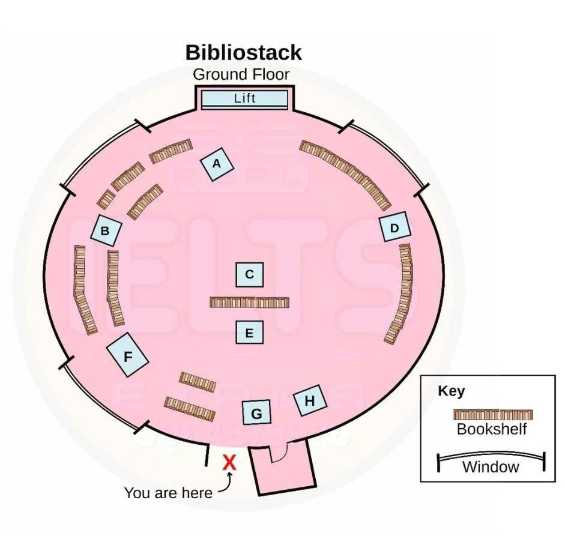

Phiếu trả lời Listening
Bấm số câu để nhảy tới câu đó. Bài làm được tự lưu trên máy này. Thời gian thi thật: khoảng 30 phút.
PART 1 Questions 1–10
Complete the form below.
Write NO MORE THAN TWO WORDS AND/OR A NUMBER for each answer.
International Student Travel Agency Enquiry Form Name: Sarah Brown Date of birth: Address: 21 Waverley Road, Radstone, RD4 6W Contact tel. no.: Notes
|
📜 Lời thoại Part 1
Now turn to part 1 on page 2 of your question booklet. Part 1 You will hear a conversation between a travel agent and a student who is planning a trip abroad. First, you have some time to look at questions 1 to 6.
Now listen carefully and answer questions 1 to 6. Hello, how can I help you? I'm taking a year off and I'm hoping to travel abroad and to find work as well for part of the time.
I know you specialise in student travel and work placement, so... That's right, we can help you arrange your travel and set up a job for you. But first of all, I need some personal details, and then we'll match your details against our database to see what's available work-wise.
Great. OK, your full name? Sarah Brown.
Date of birth? March the 13th. Oh, I'm the 31st!
1988. And your address? 21 Waverley Road, Radstone RD46WV.
And a contact telephone number, please. I can give you my mobile number. 0903 775 115.
Fine. Now, tell me where you plan to travel to and I'll see how I can help. Well, I'd like to go to Northern Europe.
Have you been there before? No, I know Southern Europe quite well as I've been there with my family. We always went by plane, but now I can choose.
I'd like to go by train so I can stop off whenever I want. OK. Now, just as important, what sort of work have you got in mind?
Well, I thought about hotel work because then I might get accommodation with the job and I'd like to work for about half the year. That sort of work is usually quite competitive. Perhaps you should consider an alternative just in case.
Such as? Well, lots of students like to work on a farm and we have lots of requests from people looking for student workers for a few weeks at a time throughout the year. You can generally earn quite good money if you're willing to work fairly long hours.
Before you hear the rest of the conversation, you have some time to look at questions 7 to 10. Now listen and answer questions 7 to 10. Now, travel.
Buying single tickets would be expensive so the best option would be to have a European pass which would give you unlimited rail travel at off-peak times. To start off with, we could issue one for up to three months to cover the countries you're intending to visit. Sounds good.
Do you have any information about youth hostels which I could use to plan my route? Yes, I'll give you a booklet now. But it's down to you to book your accommodation.
At certain times of the year, especially during public holiday periods, such places fill up fast. And remember, if we're going to arrange work for you in the countryside, you won't be able to go out easily in the evenings. Although you'd probably be too tired anyway.
I won't mind that. And you're going to be travelling alone? Yes.
Well, before I make any arrangements for you, you need to have insurance for your entire trip. We can arrange that for you if you like. What does it cover?
Any valuable items, jewellery for example, your money, your mobile, your health, and if you needed to get back home quickly, you'd be covered so you could buy a plane ticket. Right, I'll do that. I thought I'd take my laptop so I can email and keep in touch with people at home.
Not a good idea to lug your computer around with you. It's much more sensible to rely on an internet cafe. That's what we tell people to do.
Oh, OK. Right, so I've entered all your details, let's see what the database comes up with. That is the end of part one. You now have one minute to check
PART 2 Questions 11–20
Questions 11–15
Label the map below.
Write the correct letter, A–H, next to Questions 11–15.

11 seating area
12 cushions
13 computer bench
14 café bar
15 newspapers
Questions 16–20
Choose the correct letter, A, B or C.
16 The bookshop aims to
17 Children’s books are located on the
18 To help parents relax, the bookshop
19 Regular book readings are held
20 At the poetry workshop, participants
📜 Lời thoại Part 2
Part two. You will hear the manager of a bookshop called Bibliostack talking to a group of young people about the way the bookshop is organised.
First, you have some time to look at questions 11 to 15. Now listen carefully and answer questions 11 to 15. Good morning, everyone, and a big welcome to Bibliostack.
Firstly, I'll explain the plan of the store to you. The building is on seven floors and is circular, as you can see, and we're here on the ground floor in its entrance hall. Right in the centre of this floor, but behind the bookshelf so you can't see it very well from here, is our main seating area, where people are encouraged to sit and read for as long as they like.
But they're under no pressure to buy what they're reading. That's not how we operate. And if you look to your immediate left, past the first double row of shelves, you'll see piles of coloured cushions in front of the window there.
We provide those so that people can sit wherever they want. Lots of people like to sit close to the bookshelves, and if they want to sit on the floor there, we want them to be as comfortable as possible. On your right, between the two larger bookshelves, you'll see the computer bench, where our visitors can search through our entire catalogue.
We pride ourselves in being the largest bookshop in the country, so our sales assistants can't possibly know all the available titles. Although the room in front of you is dominated by the bookshelves, at the far end, just in front of the lift, you'll see that we provide a small cafe bar here too. And just to your right, there's a door to the cloakroom, where people can leave their coats.
Then after that, there's a stand where we keep a selection of local and national newspapers. Customers are welcome to browse through them, and we also have some for sale. We really want people to feel as though they're browsing through books in the comfort of their own home.
Before you hear the rest of the talk, you have some time to look at questions 16 to 20. Now listen and answer questions 16 to 20. Right, now I suggest we walk slowly up through the building, and I'll give you more information as we go.
We're open 12 hours a day. We don't mind if people spend the whole day here, but leave without buying anything. Of course, we hope they'll buy something, but our purpose is to draw people in, to provide the kind of environment which makes them want to stay and read.
Look at how busy each floor is, but how quiet. You may be wondering whether there are any children in the building. We debated about locating children's books on the ground floor, or halfway up the building, like the third or fourth floor, but in the end, we decided to put them on the very top level, and I can assure you it's not the least bit quiet up there.
Of course, many parents would prefer to spend time on other floors, and so we provide a supervised area for children under two in the basement, so parents can wander around the shop for a few hours and not worry. But they do have to pay for this service, because although we thought about using some of our own assistants, we decided to employ qualified nursery staff for parents' complete peace of mind. Now, we're just passing the fiction section, and you've probably noticed a small crowd of people beginning to gather.
That's because a well-known author is going to read from her latest novel. We try to hold events like this at least once or twice a week, and as you can imagine, they're very popular. We don't make a charge for people to attend, but we obviously hope that some of them will want to purchase the book after listening to part of it being read aloud.
Other events which are proving to be very popular are our workshops. Last week, we held a poetry workshop, and people came along with poems that they'd written. One of the country's best-known poets ran the workshop, and the participants read their poems aloud to him.
He was kind and encouraging, and many people felt inspired by his advice. It's extremely difficult to earn your living as a professional poet, and even published poets have other jobs. Now, we're going to take a look at our section on audiobooks.
That is the end of part two. You now have 30 seconds to check your answers to part two.
PART 3 Questions 21–30
Questions 21–24
Choose the correct letter, A, B or C.
The Just-in-Time Supply System (JIT)
21 Ron suggests that in his presentation he should have
22 The tutor says that in his presentation Ron omitted
23 Ron says that he found his information on standardising parts from
24 The tutor suggests that in the service sector, JIT is
Questions 25–30
What criticism is made of each of the following technical aspects of Ron’s presentation?
Choose SIX answers from the box and write the correct letter, A–H, next to Questions 25–30.
Criticisms
A too informal
B too irregular
C too predictable
D too sudden
E too technical
F too unenthusiastic
G too loosely related
H too vague
Technical aspects of presentation
25 speed of delivery
26 purpose
27 transitions
28 visuals
29 vocabulary
30 body language
📜 Lời thoại Part 3
Part three. You will hear a business student called Ron getting feedback from his tutor on his presentation. First, you have some time to look at questions 21 to 24. Now listen carefully and answer questions 21 to 24.
Thanks, Ron, for coming to my office to discuss the presentation you gave yesterday to the business management seminar. We'll go over what you did with the aim of helping you improve your next presentation. Sounds good.
Now, the topic was the just-in-time, or JIT, supply system used by a lot of manufacturers, first in Japan and then in the West, I think. Yes, but actually one thing I should have made clearer and talked about was the fact that the Americans actually pioneered the idea of just-in-time, though it wasn't called that. Henry Ford and his cars, in fact, at the turn of the 20th century.
And later, a big US supermarket chain used it, and this was where Toyota in Japan got the idea for its car making. Yes, that would have been a good addition. Now, before we go any further, I think I would suggest that you should have stopped and clearly defined just-in-time for your seminar colleagues.
You said its aim was to reduce waste, and you mentioned that classic business theory assumes that stock, or inventory of parts, are counted as assets, but just-in-time sees them as unnecessary waste. But you never told us that JIT simply means waiting until the last moment to order new supplies as you need them. Yes, you're right.
I should have done that. Now, you talked a bit about standardising parts as a way of streamlining JIT. Where did you get your data from?
Well, I tried an internet website on the subject which is called The Lean Clearinghouse, but it was too technical for me. So, in the end, I got my data from a textbook called Learning from Toyota. I found some journal articles too, but they didn't seem very useful.
Yes, well, there is a US government report on it I've seen. I'll get a copy for you. Great.
I look forward to reading through it. And while you're at it, you might want to find out about cases where JIT might not be suitable. And that's in service industries like tourism or healthcare, where customers are paying for something that they can't actually see or count.
Although JIT is fashionable today, some people would say it hasn't proved so successful in the service sector as it has with the manufacturing of goods that can be quantified. That would be interesting. I'll see what I can find out.
Before you hear the rest of the discussion, you have some time to look at questions 25 to 30. Now listen and answer questions 25 to 30. Now, unless you have any more questions, let's turn to a critique of the technical aspects of the presentation.
I'm afraid I'll emphasise the things I think you might want to work on. It was a good talk, but with a little work, your next presentation should be excellent. Fine.
That would be helpful. Actually, I wasn't happy with my delivery. I sometimes seemed to talk fast and sometimes slow.
I was on edge, I guess. Yes, you were. And as well as that, your purpose wasn't very specific.
In future, you need to lay out exactly what you're going to cover and why. Make it clear and concise and not so general. And what about my transitions from one section to the next?
Well, you didn't link the sections, did you? You went too quickly from one to the next. It was all just too abrupt.
Okay, I'll try to improve that. Now, your PowerPoint visuals were lovely, but sometimes I got the feeling that, nice as they were as pictures, they didn't have much to do with what you were talking about, right? You're right.
And, you know, another thing, I could see from the other students' reactions, they just didn't understand some of the vocabulary I was using. Good point. Well, remember, your audience were laymen, mostly without knowledge of JIT.
So, you need to simplify and try to put things in everyday English. I never seem to do that. And lastly, I'll just mention your body language.
You didn't use gestures and you just stood straight without any animation. It didn't make you seem very interested in the subject. I know, even though I really do like the subject.
Sorry. Well, despite all this, I enjoyed your presentation and I could see you put lots of work into it. I look forward to an even better presentation from you next time.
Well, thanks for your help. That is the end of part three. You now have 30 seconds to check your answers to part three.
PART 4 Questions 31–40
Complete the notes below.
Write ONE WORD ONLY for each answer.
Dyscalculia
|
📜 Lời thoại Part 4
In part four, you will hear about studying Dyscalculia, a neurodevelopmental disorder affecting numerical abilities. First, you have some time to look at questions 31 to 40. Now, listen carefully and answer questions 31 to 40.
Dyscalculia, a complex neurodevelopmental condition, refers to a learning disorder marked by significant challenges in understanding and manipulating numerical concepts, quantities, and mathematical operations. It's a condition that affects children's ability to understand and work with numbers. Currently, most schools use the traditional method of teaching mathematics, which may not be effective for children with Dyscalculia.
These children struggle with grasping mathematical concepts, especially when it comes to understanding the concept of time and sequence. They find it challenging to comprehend the passage of time and the order in which events occur. In the classroom, teachers focus on providing everyday practical examples to help these children overcome their difficulties.
They engage the students in activities that involve dealing with money, as this is a common challenge for children with Dyscalculia. By incorporating real-life scenarios, teachers aim to make the learning experience more meaningful and relatable for these students. Additionally, teachers provide individualised support and interventions tailored to each student's needs.
To boost their confidence, children with mathematics disorders are encouraged to practise more calculations and problem-solving. This additional practise helps them develop a stronger sense of self-assurance when it comes to dealing with mathematical tasks. Teachers also provide positive reinforcement and praise for their efforts and progress.
Teachers also implement strategies that encourage children to make educated guesses when they encounter mathematical problems. By empowering them to make informed guesses, teachers hope to foster problem-solving skills and reduce anxiety associated with mathematical challenges. Additionally, they incorporate various exercises, such as breathing techniques, relaxation exercises, and even walking breaks, to promote a conducive learning environment.
These activities aid in reducing stress and promoting focus during math lessons. Teachers also explore alternative teaching methods, such as visual aids and manipulatives, to enhance understanding and engagement. Researchers in this field are particularly interested in finding a potential link between Dyscalculia and language learning difficulties.
They are investigating whether there is a connection between language barriers and the challenges children face in mathematics. Understanding this link could help inform more targeted interventions and support strategies. Children with Dyscalculia often struggle with concentration and maintaining focus.
Teachers are aware of this issue and work to provide additional support and accommodations to help these children stay engaged during lessons. They may use techniques like chunking information, breaking tasks into smaller steps, and providing regular breaks. With this comprehensive approach to teaching children with Dyscalculia, the aim is to provide them with the necessary skills and strategies to overcome their mathematical challenges.
By implementing these strategies, children may no longer require additional treatment or training specifically focused on their mathematics disorder. Ongoing assessment and monitoring of progress are crucial to ensure the effectiveness of interventions and make any necessary adjustments. It's important to note that Dyscalculia affects not only the children, but also their families and teachers.
Teachers and families play a crucial role in supporting these children and understanding their unique needs in the classroom and at home. Open communication, collaboration, and a supportive environment are key in helping children with Dyscalculia thrive academically and emotionally. By recognising and addressing Dyscalculia, we can provide a more inclusive and supportive learning environment for all students.
That is the end of Part 4. You now have one minute to check your answers to Part 4.
Phiếu trả lời Reading
Bấm số câu để nhảy tới câu đó. Bài làm được tự lưu trên máy này. Thời gian thi thật: 60 phút.
READING PASSAGE 1 Questions 1–13
You should spend about 20 minutes on Questions 1–13, which are based on Reading Passage 1 below.
Steam across the water
A look at the early history of boats powered by steam
During the 1600s, very early in the development of steam engines, inventive spirits like the Frenchman Denis Papin dreamed of – and experimented with – boats driven by steam, rather than by the wind or human effort, but many decades passed before those visions became reality.
Englishman Jonathan Hulls took out patents on a steamboat in 1736, but it was to be driven by a Newcomen engine, which was heavy and therefore inefficient, and would never be a success. In 1763, William Henry, an American, put a Watt steam engine in a boat, but it sank. Nearly 20 years later, in the 1780s, a steam-powered paddle-wheeler managed to last fifteen minutes against the current on the River Saone in France, but lacked the endurance for longer trips. Developments elsewhere included a boat driven by a steam-powered water-jet and able to do six kilometres per hour. However, all these steamboats were either too slow or too expensive to run. For example, American John Fitch successfully trialled his first steamboat in 1787, but although he tried a number of designs and solved many technical challenges – one of his boats could even travel at 13 km/h – he could never convince sceptics that steamboats would pay.
The 19th century came before real success could be claimed. In Scotland in 1802, Lord Dundas launched the steamboat Charlotte Dundas, which was driven by a paddle wheel and had an improved engine designed by William Symington. Barges, some weighing as much as 70 tonnes, were towed by this steamboat 30 kilometres along the Forth and Clyde Canal to Glasgow, Scotland’s second city. Soon after, success came to American Robert Fulton, whose countrymen called him ‘the father of the steamboat’. Inspired by news of the Charlotte Dundas, Fulton ran steamboat trials on the River Seine, in an attempt to attract French support for his submarine Nautilus. He later imported a Boulton-Watt steam engine and built a boat to use it in. In 1807, the Clermont began a scheduled passenger steamboat service between New York and Albany, 250 kilometres up the Hudson River, taking 30 hours for the trip. Within a few years, steamers were running on the St Lawrence River in Canada and would soon appear on other rivers and lakes, including the Mississippi River, a most famous venue for the paddle-wheelers.
Back in Scotland, Fulton’s ideas inspired Henry Bell, who launched his Comet in 1812 on the Clyde between Glasgow and Greenock. Inside a decade, dozens of steamboats were to be seen on the rivers, lochs and canals of Scotland, carrying cargo and occasionally passengers. The age of steamboats had come.
Once steamboats were carrying passengers and industrial goods along the inland waterways and sheltered coastlines of Europe, North America and elsewhere, the challenge became to send steamboats onto the open ocean, such as across the Atlantic Ocean, between Europe and the US. Travelling under steam power alone would require engines to use less coal so the ship could stay at sea for several weeks. In order to provide a reliable service, it was also necessary to replace paddle wheels as a source of power with something less affected by the rolling of the ship.
Without waiting for such breakthroughs, crossings under a combination of steam and sail got underway in 1819 with the American ship Savannah. A regular service took another two decades and introduced the famous name of Cunard. Securing the British government contract for the mail service across the Atlantic, Samuel Cunard established a shipping line in 1840, soon carrying passengers as well, and offering guaranteed sailing dates. Cunard’s first ships used a sail-steam combination, but the era of the passenger liner, using steam alone, was getting close.
When it came to building the ships, the versatile British engineer Isambard Kingdom Brunel set the pace. Brunel, brilliant and daring, had already built the Great Western Railway. He created ever bigger ships – faster, more luxurious and comfortable for passengers. The Great Western, launched in 1838, was 70 metres long and crossed from Bristol to New York in just fifteen days. The largest paddle steamer ever built was Brunel’s Great Eastern. Ultimately too expensive to run as a passenger ship, it was leased to lay the first submarine telegraph cable from Europe to America. His 1853 Great Britain, nearly 100 metres long and luxuriously appointed, was the first ocean-going steamship made of iron, and the first to use the underwater screw propeller for powering movement in place of paddle wheels. The idea of the screw had been around since the experiments of the American John Stevens in 1803, but only in 1838 did a large steamer use one, the riverboat Archimedes built by Francis Pettit Smith. Later ships had twin screws for reliability.
In many modern ships, steam turbines have replaced engines with pistons, with fuel oil instead of coal to fire the boilers. Diesel engines keep others moving. The largest ships afloat now would dwarf Brunel’s Great Eastern (launched in 1860); the Atlantic can be crossed in only four days. But in whatever form, the ever-evolving descendants of the original visions of Denis Papin and Robert Fulton continue to travel the seas in vast numbers.
Questions 1–6
Complete the table below.
Write ONE WORD ONLY from the passage for each answer.
| Date | Event |
|---|---|
| 1600s |
|
| 1730s |
|
| 1780s |
|
| Early 1800s |
|
| 1812 onwards |
|
Questions 7–13
Do the following statements agree with the information given in Reading Passage 1?
In boxes 7–13 on your answer sheet, write
TRUE if the statement agrees with the information
FALSE if the statement contradicts the information
NOT GIVEN if there is no information on this
7 For steamboats to cross the Atlantic Ocean, engines which used fuel economically were needed.
8 Using paddle wheels guaranteed reliability on ocean crossings.
9 The Savannah was much faster than a regular paddle steamer.
10 Brunel preferred designing railways to steamships.
11 The Great Britain had more than one innovative feature.
12 The design of the riverboat Archimedes was widely admired.
13 Modern ships that cross the Atlantic use the same energy source as the early steamships.
READING PASSAGE 2 Questions 14–26
You should spend about 20 minutes on Questions 14–26, which are based on Reading Passage 2 below.
IQ Scores
How they are changing and what the changes mean
A Studies from numerous countries suggest that IQ scores have been rising fast since at least the 1950s - enough to mean that someone with an IQ classed as average at that time could be labelled as having low intelligence today. However, psychologists disagree about what the upward trend in scores really means. Some researchers argue that people are not getting more intelligent overall, but just getting better at a particular sort of problem solving. Others say they have found echoes of rising IQ scores in ‘real world’ measures of intelligence. To confuse things still more, there are hints that the trend may be about to grind to a halt.
B James Flynn, a professor of political science, first showed that IQ scores were rising in the mid-1980s, and became famous after others dubbed the pattern he had observed the ‘Flynn effect’. In a landmark paper he made detailed comparisons across fourteen countries of trends in the results of tests that measure reasoning power. Overall, these showed a real growth in scores of up to 25 points in a generation. To find out more, Flynn went on to look at scores for each type of reasoning that IQ tests set out to measure, such as verbal, numerical and visuo-spatial. This last test category usually includes ‘Raven’s matrices’ - sequential patterns with one piece missing. The candidate has to choose, from a set of alternatives, which shape to put in the empty space. When Flynn took a closer look at the scores, the pattern was clear. The strongest gains in almost every case were on Raven’s matrices and similar tests, while verbal and arithmetical scores showed more modest rises. Since presenting his original paper, Flynn has looked at data from further countries and found the same upward trend, with the same skills responsible for most of the increase.
C Flynn feels that his eponymous effect is meaningful, but does not interpret it as evidence that people are becoming cleverer. Our grandparents were not retarded and we are not geniuses, he says. More likely we have simply developed the skills and habits of mind that make us better at solving abstract problems, and - just as importantly - we take such problems seriously. Flynn believes that demands of visuo-spatial abilities have grown because of TV, computers and cars, and also that, in societies where intelligence has become something people focus on excessively abstract problem-solving skills develop faster than other skills.
D Others have different views about what might account for the increase in IQ scores. John Rust of the University of London suggests that it is not just an increase in visuo-spatial activities that is pushing up IQ scores. He believes that there are several factors, including the fact that, in more complex societies, people have to think harder to find solutions to problems they face. He also points out that if just one mind grasps a new concept, such as Einstein and the theory of relativity, it may then be easier for society in general to think in a more complex way. Others, such as experimental psychologist Robert Howard, argue that overall intelligence really has risen, helped by better nutrition, smaller families, wider access to education and other environmental changes.
E Howard’s latest research has sent him on a different line of enquiry. Controversially, he now believes that the rise in IQ scores might have peaked in industrialised countries. To support this view, he cites data from Denmark. The Danish military still summons virtually all young men before a draft board to identify who is suitable to do military service. Since 1957, all 17-year-olds there have taken exactly the same qualifying IQ tests - including ones similar to Raven’s matrices. Candidates must also be able to answer verbal questions such as ‘Sun is to day as Moon is to ?’, and number-series questions such as ‘2, 3, 5, 8, ?’. Results in these tests have been carefully analysed by Thomas Teasdale, a neuropsychologist. He found that during the 1960s and ’70s, scores showed gains on a scale similar to those of other countries, but by the 1990s the rate of improvement had slowed right down to about one IQ point over the decade. Furthermore, the scores were improving only on the visuo-spatial questions; verbal and numerical performance was flattening out. Most intriguingly, however, scores from 1999 onwards show an overall downturn. One explanation might be that there is some absolute ceiling to people’s abilities to perform these tasks, no matter how much the prevailing culture encourages them. However, as Teasdale points out, if such a ceiling had been reached, the test results should show scores pushing against it rather than actually falling.
F Flynn is keeping a close eye on the findings, but is not jumping to conclusions until data from other countries is available. However, he does wonder whether the conditions leading to dramatic improvements in mental ability disappear as societies become more prosperous. He points out that in human history, prosperity often led to decadence, and argues that the case of ancient Rome can be viewed as an illustration of this.
Questions 14–18
Look at the following statements (Questions 14–18) and the list of people below.
Match each statement with the correct person, A, B, C or D.
Write the correct letter, A–D, in boxes 14–18.
NB You may use any letter more than once.
List of people
A James Flynn
B John Rust
C Robert Howard
D Thomas Teasdale
14 Modern technology has influenced some aspects of human intelligence.
15 IQ scores may not have attained their natural limit.
16 Improved diet has a positive effect on mental powers.
17 Exceptional individuals can have an impact on collective intelligence.
18 As societies become more sophisticated the need for problem-solving skills increases.
Questions 19–22
Reading Passage 2 has six paragraphs, A–F.
Which paragraph contains the following information?
Write the correct letter, A–F, in boxes 19–22.
19 an account of a selection procedure involving a particular group of people
20 a description of one component of a visuo-spatial test
21 an overview of the different interpretations of IQ score trends
22 an example of the negative effect affluence may have on IQ trends
Questions 23–26
Complete the summary below.
Write NO MORE THAN TWO WORDS AND/OR A NUMBER from the passage for each answer.
James Flynn During the , James Flynn conducted research showing that IQ scores were increasing. Flynn then analysed specific kinds of reasoning ability separately. He found that tests called , which measured visuo-spatial skills, accounted for the biggest score increases, whereas scores in numerical and components rose less steeply. Results from research in other , which Flynn has examined more recently, are consistent with his earlier findings. |
READING PASSAGE 3 Questions 27–40
You should spend about 20 minutes on Questions 27–40, which are based on Reading Passage 3 below.
Practical Learning in the Classroom
A teacher describes a case study involving middle school students and traditional earthen architecture
A The way we think about architecture in schools has come a long way. Once, studying architecture in the art class meant learning to appreciate great buildings art-history style, through slide presentations. In recent years, though, the American Institute of Architects has fostered the idea that the process of architectural design, not just the appreciation of architecture, is a beneficial aspect of the art curriculum (Sadler, 1989).
B The value of architectural design is that it is the concrete training ground for a broadly applicable creative process. Architectural training can help people design structures to meet needs. It can help farmers design crop rotations to meet needs. Furthermore, it provides hands-on experiences that reinforce learning in various other subjects, from math to social studies.
C In the ongoing dialogue about architecture in the middle school art curriculum, many believe students should actually build the structures they design in their courses. Although the technology and expertise required of modern architecture can prohibit students from actually realizing their designs, traditional architectural materials and methods remain quite accessible to the art classroom. Traditional architectural materials, such as earth, clay and straw, are cheap, easy to work with and readily available. Further, when students participate in the construction or preservation of a traditional earthen structure in their local community, they engage in a form of experiential learning and they are motivated to invest in the project. This is evident in a case study of an adobe* conservation project with middle school students in the town of Zuni, New Mexico, in the Southwestern United States.
D Traditional architecture reaches back to preindustrial America, when local resources and cultures produced structures in styles unique to each region. In New Mexico, examples of hand-built earthen structures still abound. The region has seen some decline in traditional architecture as industrialization has brought new building codes and materials; however, the traditional, non-industrial home, either preserved from earlier generations or newly built, remains in use. Traditional building materials and the land that supplies them are so accessible that handcrafting a house still remains feasible.
E Thus, with no technical expertise and little cost, middle school students can participate in the construction or preservation of a traditional earthen structure. During the project, a student will get to know the materials, understand the chemistry, solve problems, work with classmates, and exercise muscles. The student can apply knowledge of design principles and the creative process while participating in a cooperative effort. But most significantly, this type of project-based activity motivates students to invest intellectually and emotionally in the outcome.
F The town of Zuni, where I taught art, was surrounded by adobe construction, new and old. Behind our main high school building there was a one-room adobe structure which was once used for teaching. Now it served as a place where old furniture could be kept. I sent my class home with the oral history assignment to ask their family, friends and neighbors questions to find out about that building. From their research we compiled a sketchy history: it began as a kindergarten classroom; it later became an art classroom; now it was full of broken desks.
G The building’s design kept it relatively warm in the winter, even without heating, due to its broad south face, and it stayed cool in the summer due to its spacious, ventilated attic and massive earthen walls. Because of this, my students agreed it was worth preserving and were enthusiastic about helping. Preservationist Shalie Gasper arrived in the fall to help with an assessment of the building’s needs. She recommended replacing the stucco** that encased the original adobe walls with a traditional mud plaster. She showed us where to find local supplies of sand and clay soil for the plaster mix. We began work on the stucco removal in late fall. The next spring the students were ready to replaster. To teach the traditional skills, Gasper and other local specialists joined us. They gave my class three full mornings of intensive workshops on history and preservation as well as mud-plastering technique, and the building got a new coat of traditional mud plaster.
H Small design-and-build projects such as this can be seen through to the finish when working with earth in the art curriculum. A simple landscape feature such as a wall, entryway, or arch can draw students into important aspects of design that involve the structure’s interaction with people, the surrounding landscape, and natural elements. The same project may provide an opportunity to focus on the chemistry of soil or the structural dynamics of construction. Design goals might guide students to involve traditional forms, consider formal aspects, or integrate math skills of measuring and estimating.
I During our traditional architecture unit, the students realized that something old and almost forgotten is valuable and worth preserving. Many others in the community and around the country share this renewal of interest in traditional earthen technologies. It is the connection to a cultural heritage that interests some; the quality of living within massive, natural walls that attracts others; or for others, the sustainability of the process and the minimal energy spent in construction. The value of adobe in general is becoming more and more known, but little has been said about its value in the art curriculum until now. This experiment in adobe conservation with middle school students convinced me that traditional architecture deserves a place in the regular curriculum.
*adobe: a mixture of mud and straw that is made into bricks and used for building
**stucco: fine plaster used for coating wall surfaces
Questions 27–31
Choose the correct letter, A, B, C or D.
27 What education initiative does the American Institute of Architects currently promote?
28 In the third paragraph, what problem with teaching architecture on art courses does the writer note?
29 What is the greatest benefit for students that the writer sees in a traditional architecture project?
30 What is the purpose of the eighth paragraph?
31 What does the writer say about traditional building and the general population?
Questions 32–36
Complete the summary using the list of words, A–H, below.
Write the correct letter, A–H, in boxes 32–36.
A experts B location C design D storage E students F resources G training H businesses |
The Zuni earthen architecture project The students in Zuni chose to renovate an old building which was being used for They came to an agreement that the building was worthy of rehabilitation based on its functional At the beginning of the project, students were given the task to discover the history of the building through interviews with local residents. Through the course of the project, they learned where to locate for the project. They also worked closely with a number of on each step of the project. During the project, students were also given to build useful skills. |
Questions 37–40
Do the following statements agree with the claims of the writer in Reading Passage 3?
In boxes 37–40 on your answer sheet, write
YES if the statement agrees with the claims of the writer
NO if the statement contradicts the claims of the writer
NOT GIVEN if it is impossible to say what the writer thinks about this
37 The price of materials is one drawback to using traditional architecture.
38 Earthen structures can easily be built in all regions of the U.S.
39 Working with a traditional earthen structure can have physical benefits.
40 A traditional architecture curriculum is best suited to middle school level students.